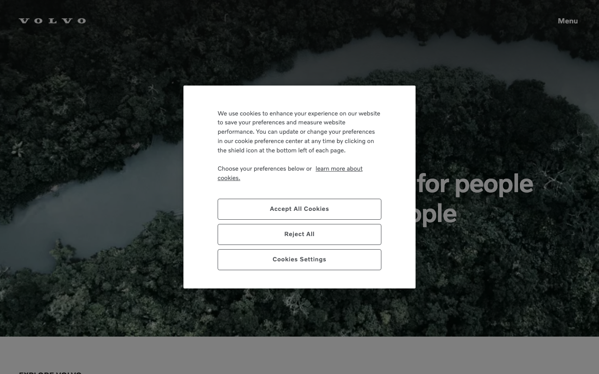

Volvo Cars — centenary active, `Volvo Novum` confirmed in shared CSS
이번 캡처의 핵심은 두 겹이다. shared pkg에는 `Volvo Novum`이 실제로 남아 있고, 현재 `/kr/` 홈은 `data-theme="centenary"`에서 sans를 `Volvo Centum`, display를 `Volvo Broad Pro`, accent를 `#0B2DED`로 다시 묶는다. 즉 Volvo Novum은 존재하지만, active homepage의 시각적 결과물은 Centum 기반이다.

[data-theme="centenary"] {
--v-font-sans-family:
"Volvo Centum",
"Helvetica Neue",
"Helvetica",
"Noto Sans",
"Segoe UI",
"Arial",
sans-serif;
--v-font-regular-weight: 400;
--v-font-emphasis-weight: 600;
}
[data-theme="centenary"] {
--bg: #FFFFFF;
--fg: #000000;
--muted: #5E5E5E;
--surface: #000000;
}
[data-theme="centenary"] {
--accent: #0B2DED;
--accent-subtle: #0B2DED0A;
--accent-medium: #0B2DED1F;
}
Novum = shared base, Centum = active centenary로 구분해서 써야 한다. 또한 이번 캡처에서 OneTrust는 --ot-* custom property보다 ot-* selector namespace로 드러났다.
분위기와 철학
현재 Volvo 홈은 감성적인 스칸디나비아 화이트 미니멀리즘이라기보다, 시스템적으로 정리된 흑백 구조 위에 파란 상태 신호만 얹는 방식에 가깝다.
실제 `/kr/` 홈의 active token은 `#FFFFFF`와 `#000000`을 가장 강한 축으로 쓴다. 보조 텍스트는 `#5E5E5E`, tertiary는 `#787878`, 상태 강조만 `#0B2DED`다. 이 조합 덕분에 제품 사진, 가격, CTA가 모두 같은 페이지 안에 있어도 구조가 무너지지 않는다.
폰트는 더 흥미롭다. shared CSS는 여전히 `Volvo Novum`을 base sans로 선언하지만, centenary 테마가 실제 렌더 단계에서 `Volvo Centum`으로 갈아탄다. 그래서 브랜드 고유 폰트 계보는 이어지되, 화면 결과는 더 단단하고 묵직한 Centum 톤으로 보인다.
공간은 `8 -> 12` column grid, `81rem` grid max, `160rem` page shell, `.125rem`부터 `8rem`까지 이어지는 spacing ladder로 운영된다. 표면 분리는 drop shadow보다 ring, border, blur, scrim에 가깝고, selection/focus에만 파란색이 날카롭게 튀어나온다.
출처와 수집 기준
이번 업데이트는 `volvo.com`이 아니라 실제 렌더와 CSS가 살아 있는 `https://www.volvocars.com/kr/`를 기준으로 다시 수집했다.
https://www.volvocars.com/kr/curl_cffi Chrome impersonation + direct CSS fetch--v-* custom properties + ot-* / #onetrust-* consent selectors--v-*로 확인됐고, OneTrust는 selector namespace 쪽이었다. 이번 리포트는 그 차이를 분리해서 썼다.
테크 스택
Volvo 홈의 CSS는 한 덩어리 테마 파일이 아니라 shared pkg, utility, feature CSS Module, site-navigation 번들이 동시에 작동하는 구조다.
/static/shared/pkg/css/v1/ — `font-face`, `tokens`, `styles`, `styles_md`, `styles_xl`, `styles_hover`#0B2DED, shared legacy accent = #1C6EBA타이포그래피
공유 패키지의 base sans는 `Volvo Novum`, 현재 홈의 active sans는 `Volvo Centum`이다. 이 이중 구조를 모르면 Volvo를 재현해도 화면이 계속 어긋난다.
Volvo Centum — theme token에서 `400 / 600` 계층으로 사용Volvo Novum — base token과 `font-face.8324f4d8.css`에 실제 존재Volvo Broad / Volvo Broad Pro| Token | Size | Weight | Line-height | Notes |
|---|---|---|---|---|
--v-font-12 | .75rem | 400 | 1.667 | micro / caption |
--v-font-14 | .875rem | 400 | 1.572 | secondary body |
--v-font-16 | 1rem | 400 | 1.5 | base body |
--v-font-20 | 1.25rem | 400 | 1.4 | intro / compact heading |
--v-font-24 | 1.5rem | 400 | 1.334 | small display |
--v-font-heading-1 | `round(down, clamp(2rem, 2.143vw + 1.357rem, 3.5rem), 2px)` | 400 | `calc(1em + .5rem)` | main heading |
--v-font-statement-1 | `round(down, clamp(4.5rem, 6.786vw + 2.464rem, 9.25rem), 2px)` | 400 | `calc(1em + .5rem)` | largest statement |
--v-font-statement-signature | `round(down, clamp(2.5rem, 3.929vw + 1.321rem, 5.25rem), 2px)` | 400 | `calc(1em + .5rem)` | `Volvo Broad Pro` display |
컬러
실제 CSS는 흑백 기반이다. 블루는 브랜드 면적색이 아니라 current / selected / focus state를 표시하는 상태색으로 읽는 편이 정확하다.
스페이싱
컴포넌트 내부는 고정 계단, 섹션 간 호흡은 fluid clamp. Volvo는 두 레이어를 동시에 운용한다.
| Token | Value | Role |
|---|---|---|
--v-space-2 | .125rem | micro gap |
--v-space-8 | .5rem | tight padding |
--v-space-16 | 1rem | base inner spacing |
--v-space-24 | 1.5rem | card / control padding |
--v-space-32 | 2rem | section inner spacing |
--v-space-48 | 3rem | large card / dialog spacing |
--v-space-64 | 4rem | desktop generous spacing |
--v-space-xs | `round(clamp(.5rem, 1.071vw + .179rem, 1.25rem), 2px)` | fluid tiny section gap |
--v-space-md | `round(clamp(1.5rem, 2.143vw + .857rem, 3rem), 2px)` | fluid section gap |
--v-space-2xl | `round(clamp(4rem, 5.714vw + 2.286rem, 8rem), 2px)` | hero / large section spacing |
--v-space-gutter | `clamp(1rem, 2.6vw + .3rem, 1.5rem)` | grid gutter |
--v-space-pagemargin | `round(clamp(1rem, 4.286vw + -.286rem, 4rem), 2px)` | page outer margin |
라디우스
둥글지만 무르지 않다. 기본 라디우스는 작고, pill과 dialog에서만 크게 벌어진다.
| Token | Value | Usage |
|---|---|---|
--v-radius-sm | .25rem | default small rounding |
--v-radius-md | .5rem | mid card / dialog |
--v-radius-lg | 1rem | emphasized modal / large card |
--v-radius-full | 9999px | pills / circle controls |
모션
과장된 parallax보다 blur, scale, sheet transition처럼 상태 전달용 모션이 중심이다.
| Token / Selector | Value | Usage |
|---|---|---|
--v-transition-default | .22s ease | default transition |
--v-transition-micro | .11s ease | micro interaction |
--v-transition-notable | .8s ease | larger staged transition |
prefers-reduced-motion | 50ms / 25ms / 12ms | motion reduction |
.SubNavigation_backgroundBlur__C2rTe:before | blur(12px) | sticky nav glass effect |
.MediaDialog_media-dialog__JyYXu | .22s scale / translate | dialog open transition |
.BentoGallery_galleryItemAnimation__Ul8G5:hover | scale(1.05) | gallery hover zoom |
.ChargingTool_overlayModal__vyivl::backdrop | .25s ease | sheet backdrop fade |
레이아웃 패턴
Volvo는 광활한 shell 안에 엄격한 콘텐츠 그리드를 넣는다. 풀블리드 이미지는 자유롭지만, 텍스트와 카드의 정렬은 매우 체계적이다.
Page Shell
페이지 자체는 `160rem`까지 허용하지만, 실제 콘텐츠는 `81rem` grid max에 묶인다. 넓은 캔버스를 가지면서도 읽기 폭은 통제된다.
--v-size-pagemax: min(160rem, 100vw); --v-size-grid-maxwidth: min(81rem, 100vw - var(--safe-area) * 2);
- full-bleed asset과 constrained copy를 동시에 허용
- page margin은 fluid clamp
Discovery Card
기본은 stacked grid, tablet 이상에서 horizontal 2-column 카드로 바뀐다. 내부 패딩은 `24 / 32 / 64` 토큰을 계층적으로 쓴다.
.discovery-card {
grid-template-areas:
"top"
"media"
"main";
}
@media (min-width:30rem) {
.discovery-card.horizontal {
grid-template-areas:"media main";
grid-template-columns:1fr 1fr;
}
}
- media와 text가 같은 비중으로 균형을 잡음
- selection / CTA는 ring 기반
반응형
breakpoint는 적지만 역할이 명확하다. `30rem`과 `64rem`이 거의 모든 구조 전환의 기준점이다.
| Breakpoint | Behavior |
|---|---|
< 30rem | mobile default, 8-column grid, stacked cards, drawer / dialog full-width 경향 |
>= 30rem | 12-column grid, discovery card horizontal mode, carousel card width 재계산 |
>= 64rem | desktop padding 증가, sticky navigation 3-track layout, gallery / tool desktop variant |
>= 100rem | `until-xl:*` utility hidden/invisible 기준 |
컴포넌트
Volvo의 컴포넌트는 "큰 그림자 카드"보다 "선택 상태가 또렷한 구조화된 UI"에 가깝다.
SubNavigation
sticky subnav는 blur backdrop 위에서 현재 링크를 검정 필로, CTA accent는 파란색 state로 처리한다.
<nav class="SubNavigation_container__7WUT3">
<div class="SubNavigation_backgroundBlur__C2rTe"></div>
<a class="SubNavigation_link__haBVG"
aria-current="page">Electrification</a>
</nav>
aria-current="page"-> black fill + inverted text- light hover ->
rgba(0 0 0 / 4%) - minimum tap width ->
2.5rem
Selection Card
선택 카드의 존재감은 blue ring 한 줄에서 나온다. Volvo UI는 여기서 그림자보다 selection contour를 택한다.
.SelectionCard:hover {
box-shadow: 0 0 0 1px var(--v-color-always-black);
}
.SelectionCard:has(button[aria-checked="true"]) {
box-shadow: 0 0 0 2px
var(--v-color-surface-accent-blue);
}
- hover = black 1px ring
- selected = blue 2px ring
Charging Tool
폼형 툴은 mobile single-column에서 tablet 이상 2열로 바뀌며, focus / hover 역시 accent blue로만 처리한다.
.ChargingTool {
grid-template-areas:
"info"
"media"
"cta";
}
@media (min-width:30rem) {
.ChargingTool.md {
grid-template-areas:
"media info"
"media cta";
}
}
- desktop hover = inset blue ring
- focus-visible = 2px blue border
State Color Utilities
실제 shared pkg는 semantic utility class를 제공한다. 이 계층이 token을 직접 써서 컴포넌트 일관성을 유지한다.
.text-primary { color: var(--v-color-foreground-primary); }
.text-accent-blue { color: var(--v-color-foreground-accent-blue); }
.border-ring-2 { box-shadow: inset 0 0 0 2px ...; }
.rounded-lg { border-radius: var(--v-radius-lg); }
- token -> utility -> feature CSS Module 흐름
- custom Tailwind가 아니라 자체 utility layer
라이팅 원칙
볼보의 카피는 과장된 감성보다 안전, 지속가능성, 실용적 행동 유도를 앞세운다.
CSS Export
Volvo Cars `/kr/`의 centenary active layer를 프로젝트에 옮길 때 바로 복사할 수 있는 최소 토큰 묶음.
/* Volvo Cars /kr/ — centenary active */
[data-theme="centenary"] {
--volvo-bg: #fff;
--volvo-bg-secondary: #fafafa;
--volvo-surface: #000;
--volvo-text: #000;
--volvo-text-secondary: #5e5e5e;
--volvo-accent: #0B2DED;
--volvo-accent-subtle: #0B2DED0A;
--volvo-accent-medium: #0B2DED1F;
--volvo-border: #0000001F;
--volvo-radius-sm: .25rem;
--volvo-radius-md: .5rem;
--volvo-radius-lg: 1rem;
--volvo-space-16: 1rem;
--volvo-space-24: 1.5rem;
--volvo-space-32: 2rem;
--volvo-space-48: 3rem;
--volvo-font-sans:
"Volvo Centum", "Helvetica Neue", "Helvetica",
"Noto Sans", "Segoe UI", "Arial", sans-serif;
--volvo-font-display: "Volvo Broad Pro", "Arial Black", sans-serif;
}
body {
font-family: var(--volvo-font-sans);
color: var(--volvo-text);
background: var(--volvo-bg);
}
.volvo-current-pill {
color: #fff;
background: #000;
border-radius: 9999px;
}
.volvo-ring-focus {
box-shadow: inset 0 0 0 2px var(--volvo-accent);
}
- Shared CSS still confirms `Volvo Novum`; do not delete that knowledge if you are rebuilding older modules. - Current `/kr/` homepage active sans is `Volvo Centum`, display is `Volvo Broad Pro`. - Blue is a state color. Use it on current/focus/selected first, not on big background panels. - Surface separation should come from ring, border, blur, and scrim before you reach for heavy shadows. - Grid rhythm: 8 columns mobile, 12 columns from 30rem, stronger desktop spacing from 64rem.
에이전트 가이드
리디자인 또는 구현 에이전트에게 바로 전달할 수 있는 짧은 실행 지시.
Recreate Volvo Cars /kr/ as the centenary active layer: white page, black neutral surfaces, electric blue (#0B2DED) for current / focus / selected states. Use Volvo Centum as the active UI font, but keep Volvo Novum as a confirmed shared legacy layer. Prefer ring, border, blur, and scrim over soft card shadows. Keep the 8-column mobile -> 12-column desktop grid and the 16/24/32/48/64 spacing rhythm.Do / Don't
Volvo를 Volvo답게 보이게 하는 규칙은 화려한 장식보다 시스템을 정확히 읽는 데 있다.
Do
- 현재 홈을 기준으로 할 때는
data-theme="centenary"를 전제로 구현 - active sans는
Volvo Centum, display는Volvo Broad Pro로 사용 Volvo Novum이 shared CSS에 실제 존재한다는 사실은 문서화해 둘 것- 블루
#0B2DED는 current / focus / selected 상태에 우선 배치 - ring, border, blur, scrim으로 표면을 구분
- 8열 mobile -> 12열 desktop grid 전환을 유지
Don't
- shared Novum layer를 현재 홈의 기본 폰트라고 단정하지 말 것
- blue를 hero 전체 배경이나 대면적 카드 배경으로 남발하지 말 것
- legacy shared blue
#1C6EBA와 active centenary blue#0B2DED를 섞어 쓰지 말 것 - soft card shadow를 여러 겹 쌓아 Volvo 분위기를 만들려 하지 말 것
- OneTrust selector namespace를 Volvo 본체 token layer처럼 해석하지 말 것